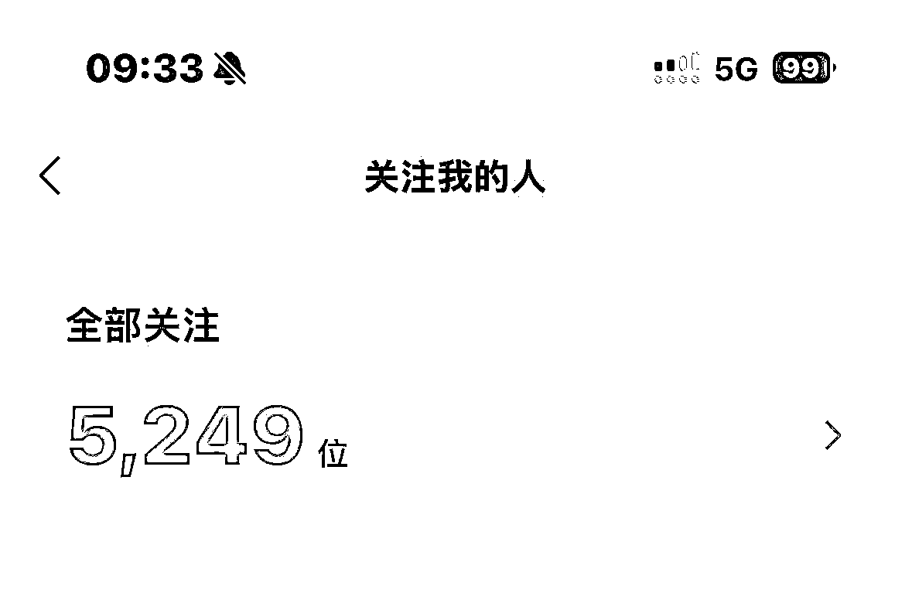
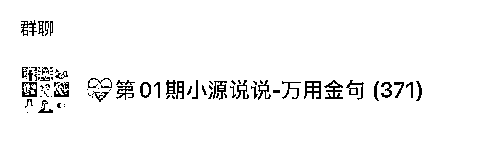
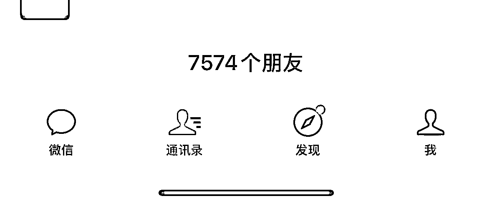
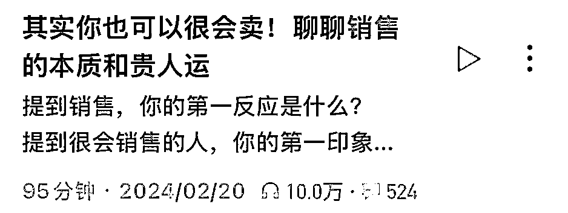
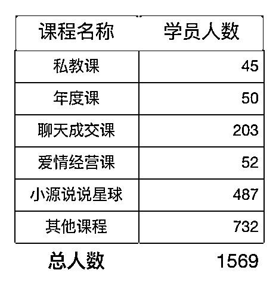
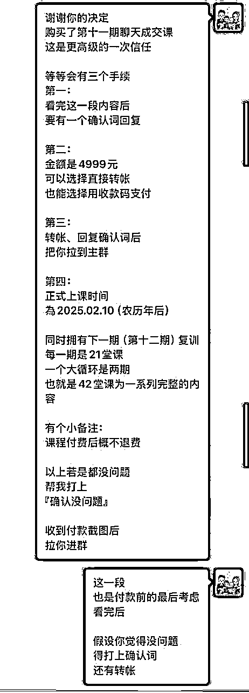
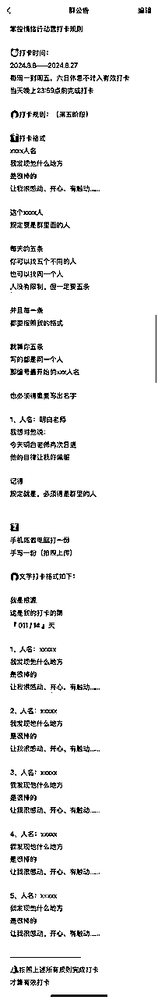

来源：https://oee5lr7gsk.feishu.cn/docx/MFJ4di0KQoD0TgxppbucIHP8nUe
全文共：13,729 字
预计阅读时间：10.8 分钟
各位生财的圈友们好，我是根源。
从2022年年初正式转型线上知识付费到现在，
今年已经是我在知识付费的第四年。
知识付费这个赛道，对我来说，就是一个
从原本线下卖产品或者卖课程的路径，转成了线上卖产品或者卖课程的路径。
也就是我会把知识付费这个赛道定义一个『销售赛道』，
只是在销售的过后，我还同时做了内容上的交付，
这个是我自己对于知识付费的定义以及看法。
那既然谈到了销售，肯定就会有低客单价与高客单价之分。
这篇文章主要想分享的就是
如何更好地让自己从低单价的销售能够往上突破圈层，进而能够卖出高单价的产品。
希望这篇文章中，我的经验和方法，能给到正在看文章的圈友一点启发
很欢迎看完文章后
能一起讨论。
我对于高单价的初始定义：
只要产品金额超过五千，就是我认为最初阶的高单价金额。
也就是5000元以下的产品，我都定义为低单价，
过五千才属于高单价产品。
当然，5000再往上没有上限，过万甚至10万，这些都属于高单价的产品。
我就做一个定义上的泛论。
我认为低单价与高单价的客户交付中会有一个非常大的不同。
低单价的交付者，要把更多关注点，甚至是所有关注点放在客户要什么；
但是高单价的交付者，他的想法会完全的相反。
高单价交付者更多的不是要花时间去在乎客户要什么，
而是要认真的思考我要带给客户些什么。
这两个思维其实是不同的，
第一个是以用户为出发点，第二个是以自身为出发点。
也就是低单价的产品更多的是想办法知道客户的所需，所以我们为客户创造价值。
但是高单价的交付就变成是，
我要如何更好的发掘自己的优势，并且把自己的价值放到最大，然后让用户来跟随我。
这个过程会有一个非常重要的操作，就是高单价的交付
必须得透过很多的内容编排以及机制上的不同来筛选出自己要的人。
这个过程我也把它称为如何培养自己的用户，
在正式进入主题之前，想跟各位分享一下
我在互联网上的一些公域平台上的数据，也就是我的对外粉丝量。
说到这儿其实挺汗颜的，因为我的数据确实不太漂亮，
甚至都能说在看完这个数据之后，我都会定义，我到现在为止还是一个互联网的小白。
2022年的年初，在刚做知识付费，
也就是我开启了我的人生第一次的线上沟通课，金额是131.4元。
这个是我正式进入知识付费赛道的起点，
当时我发现在线上任何的平台我是没有数据的。
所以明白老师就跟我说，你可以写公众号，
在刚做知识付费的时候，我唯一的对外展示获取流量的平台也只有公众号，
甚至到现在为止也只有公众号。
我目前公众号的粉丝从2022年一直到2023年的年初，
用了一年的时间，大概获得了5000左右的关注。

一直到现在，两年过后，也只增加到了五千两百多的关注，
也就是3年的时间，平均每一年的增长大概就在1000多人，将近两千人。
我的另一个数据就是第一期的小源说说沟通课，
这堂课里面总共有371人，扣除工作人员，实际报名的人数有368人。

这里面的人数分两类：
第一类的100人是我用了10天，
每天一对一的与10个人卖我的产品，10天卖了100份。
第二类，扣除这100人的剩余部分，是明白老师帮我写了一篇文章，
然后透过明白老师的链接而进来的用户。
也就是这368人，就是我在互联网上的起家资本。
第三个数据是我的微信号，
我只有一个微信，没有小号，只有大号。

这个微信通讯录的人数在2022年年初，总人数是4861人，
一直到现在，做了3年的线上知识付费人数到了7500人左右，
也就是3年的时间，增长了将近2000多人，平均一年大概有800人左右的增长。
第四个数据是去年有幸上了一档播客当嘉宾，
到现在有一年多的时间，这一期的播客有10万人收听。

以上的四个数据
就是这3年我在互联网上能够拿得出手的数据，也是可以看得见、找得到的数据。
从这四个数据看，我在互联网上真的可以算是一个小白，
甚至在流量上，我几乎没有太显著的成绩，甚至成绩还挺差的，
除了公众号之外，我几乎没有太多的平台。
以上四个数据为我带来的收益，
从22年到24年这三年平均每年都维持在7位数，当然是7位数的出头。
这里提到的收益指的是纯利润，而不是营收。
如果从上述的数据分析，相对客观的数据应该是微信的通讯录人数，
从22年的4800人一直到现在的7500人，总增长人数是2700人左右。
那我们除以三，也就是平均每一年我通讯录人数的净增长是900人，
那这900人平均可以为我带来7位数的营收，
也就是平均一个人的客单价大概是1000元左右。
当然我也没法做到只要加我好友就能够让他付钱的本事，
但是，从22年开始做付费社群到现在，
这2700人里面给我付过费的人数是1569人，转化率大约是60%。

接着说一下我的产品框架
第一阶段是100多元的产品，
第二阶段是900多元，
第三阶段是2000多元。
这个是22年当时的一个产品架构。
这个产品架构到现在是涨到了5000元，接着再往上就是3万元的产品，
再往上就是我的终身私教，从原本的6万元涨到了现在是六位数，
也就是我的产品体系里面最高金额就是六位数的产品。
上有一个很关键的数据，就是我第一期沟通课群里面的学员，
这个群对于我来讲是一个非常重要的起家资本。
看到我的公众号总关注，其实能知道公众号其实不太能为我带来多大的引流，
5000人关注，最终能够加到好友可以有个5%到10%其实就非常非常了不起了。
那第一期沟通课的371人，各位可以理解为，
我第一年的二阶段复购，一直到转介绍，都是从这371人开始并延伸的，
也就是我的流量池子，后续所有的转介绍都是因为这个池子的转介绍，而扩大出来的。
回到正题，我们要如何培养用户，从低单价想转到高客单，
最必要的能力就是
那培养的过程，我认为也是相互筛选的过程，
筛选有很多不同的方式，最简单粗暴的就是用付费来筛选。
如果你曾经卖过产品或是做过销售，一定走过某一个阶段，
就是我们害怕流失客户，当这个客户感觉上对产品有意向的时候，我们就会想着：
哎呀，你如果不付钱，那多可惜呀！
或者是你没有付钱之前，假设我就不小心得罪了你，
或者是我没有办法迎合你，有可能你就不给我付费了。
那你不给我付费，我就少了一个付费用户，
所以我想尽办法也要在第一阶段能够让用户为我付费，
甚至可能客户需要什么我都能答应，反正先收了钱才是王道。
这是我在做销售的初期有遇过的状况，
我想大多数做销售的人对于我说的这段肯定不陌生，因为没有收钱，什么都是屁。
但如果最终转化到高客单是你所想要的，
在任何的低价产品成交时，我都会把这个节奏跟速度放慢。
那什么叫做成交的时候把速度放慢，
不管是百元的产品，千元的产品还是万元的产品，
在真的要付款的那一刻，我一定会发一段比较长的确认词，这个确认词大概是这种方式。

我会跟用户说，这个是付款之前的最后确认，也是最后一次的考虑。
如果说看完之后你觉得没有问题，也愿意信任我，那可能要麻烦帮我你回复下『确认没问题』。
最后才是转账，我发现多了这个举动就能够让用户知道这个交付者是谨慎的，
这个交付者他不只是为了赶快把我的钱收到。
其实在这一步就是一个很好的筛选，因为大多数人的付费，
尤其是越小金额的付费都是冲动的，因为钱不多，所以不会重视。
那如果说在这个地方，我们就能够多一道手续，让客户能够多一点时间考虑，
我们就能够从中筛选到他真的有认真想过并且读完的用户。
当然，也不是全部，
但是最少这个步骤我们就可以做到第一阶段的筛选，以及如何培养用户的习惯，
他会知道，这个交付者他在每一次我想给他付费的时候都会做一段这个确认词，
刚好我也可以再一次的考虑。
所以这个是我在培养用户的第一阶段会使用的方法。
接着在用户进群之后，除了讲课，我们可能会有一些课堂上的作业。
这时候，有些群主可能看到群里的100人，写作业的有20人，没写的有80人
群主会很自责，或者是很失落：
哎呀，为什么有80人都不写作业？
是不是我做错了些什么？
是不是我少做了些什么？
……
当然这个也是必须要考虑的，但是我会换一种方式来关注。
我会关注那20个愿意写作业的人，
他们不止写，还天天写，还准时写。
这20个人就会是我的核心观察名单，
因为他们之所以写作业，甚至在这么低价的产品都愿意写作业，
就代表我的内容他们是认可的。
再来他们是相对其他人，对于自己的成长有更大意愿的，
同时他也能够接受我在讲课中所呈现的价值观。
所以，这20个人我就会花时间在群里互动，或者是私下跟他们聊天。
当然，如果这20个人，我私下聊天还是会筛选，
可能有十几个人会跟我聊的很频繁，
可能三五个，他们也不太回我消息。
那我就会知道说，这十几个人，他们是对我有真正的认可。
这过程有一个非常关键的重点，
我透过了内容所展现的价值观，去吸引那一些对我有好印象的人。
第三种是我透过社群的机制筛选出那一些有更强意愿的人，
这些人他们有可能没有能力付高单价，
但是他们对我的认可度一定是相对高的，这个过程非常的关键。
然后在22年的时候，我又刚写公众号，每一篇的公众号我都会锁定单一主题，
像我一直非常的推崇有一个教练或者顾问能够带着成长，
他的成长效率跟成功速度一定会更快、更稳定。
因为我自己的成长过程，就有这样子的教练陪在我身边整整陪了十年，
那我发现这十年会因为我一直都跟着一个格局比较大的人，在他身边工作，
所以，我觉得我的基本功，就变得非常非常的扎实。
这是一个我在成长过程得到的好处，这就跟亦仁说的一句话很像：
那时候，我的公众号有百分之五六十都是写相关的主题，
因为有自己的群，所以我写完公众号之后，我都会把公众号的内容发到我的群里面。
当时平均的阅读量大概都有300多，我的社群人数也就300多，
其实也就可以理解为那时候的公众号，都是我自己的人在看，
当然我一开在写文章的时候，本来就只想写给自己人看。
就是我那时候写公众号的目的就不是为了去吸引更多的公域用户，
而是我只是要有一个平台让我的学员能够看到我想表达的东西。
也就是当你有一个高客单的想法，
或者是你已经有了一个高客单的确切产品在对外输出，
或者是某一些渠道在表达你内容的时候，可以尽量的把这个思维放进去，不要只放一次，多放几次。
因为你的用户每看一次，你就能够在他的世界里面播下一颗种子，
那个种子就是，原来有这种方法可以让自己变得更好，那如果有一天我有需求，我就能够找你。
这里有一个思维，其实有一点不一样，
就是一种写文章叫做我写给大家看的，我的写文章的思维是这个文章我只写给特定的人看。
因为，高客单的群体肯定是小众而不是大众，
你要想，如果我有一个产品是20万，然后我的引流产品是100块，
也就是我只要可以卖出一单20万的产品，就等于我成交了2000个100元的用户，
这个服务起来的难易度，这肯定是不一样的。
所以，高客单的思维在最开始我们就得有步骤，
这么说好像有点套路，但是这一直是我的脑袋中的逻辑，
就是这件事情它是需要布局的，
而不是说我弄了一个高客单的产品，我一出就有人跟我买，
不可能的，绝对不可能的。
再来个点是，如果跟你购买高客单产品的人，
他是一个你不熟悉并且陌生的人，那可能后续你得付出很大的代价。
所以，我的下一个方法是，
这边的小单价就是5000元以下，如果说他付钱的次数超过三次以上，
这一类的用户，我就会特别特别的关注。
像我当时有二三十个群的用户，他们一百多块的产品买了两次，
这个产品的内容还是一样的，九百多的也买了一次，
也就是我第一年开了将近三十个以上的付费群，里面真的有20%的用户，
他们给我付费的次数是超过十次，相当于我开什么他们就买什么。
当然复购会有一些优惠，那这一类的用户，他们也是一定会看我文章的用户，
所以，这些用户到最后有有超过一半的人，我都成交了我最高单价的产品。
也就是透过产品的复购次数来筛选以及培养这个用户，
这个也是我认为很重要的一个步骤跟方法。
接下来就是与用户的私下交情，这事情太重要了，
但凡牵涉到高单价，你跟这个人没有私交，基本上是不太可能成交的。
如果没有私交，一个纯陌生用户，他主动询问并且快速的购买了你的最高单价，
千万别太开心，有大概率这会是一个坑。
当然，这个坑的意思不是说这用户不对，
而是所有高端价的产品一定建立在有非常不错的信任感基础之下，你在交付上才会轻松。
因为，越高单价的产品，就代表我们得提供更高质量的服务给他，
如果说道这个跟这个人的信任感是不足够的，
在服务的过程你会觉得特别特别的累，特别特别的烦躁。
对，我甚至用上了烦躁的词，因为这个人跟你的价值观不一定合，
在磨合的过程，你就会觉得：
哎呀，怎么同样收了这个钱，我却要耗费这么大的心力交付。
所以我几乎不会去主动的收那一些没有上过我任何课程的人，他来主动找我想付高单价的产品，
我甚至我连开口都不会开，我也不会主动的邀请他。
所以，一般来讲，他只要没有给我付费超过两次，或者是金额超过三千以上，
我是绝口不会邀请他参与我的高单价，甚至我都还不会让他知道我有一个更高单价的产品。
这是我在销售高单价的一个很重要的原则，
也就是筛选用户时，给你付费的金额量是一个很重要的判断基准。
下一条是透过清晰，并且有一些复杂的规则来挑选以及培训自己的用户。
就很像是我要弄一个行动营打卡，这个打卡的规则会比较复杂：

也就是，12点之后的打卡，在星球里面的统计就会记入隔天，
那就代表说，你当天的打卡其实是没有完成的，因为你超时了。
这些举动看似琐碎。但是规则都说的非常的清晰，只是我们要做的举动会比较多一些些。
这里有个好处，
感觉上是我们把一件事情故意用的很复杂了，
但如果说当我们把所有的打卡规则说清楚之后，
会让用户在底下复制贴上一段：
我的名字是谁谁谁，
收到这次的打卡规则，
保证14天能够全勤完成，
若是没完成，
就会惩罚200块的红包，
我们只要针对那些愿意接龙打卡承诺的人去做筛选就行。
因为他们的承诺就代表他们愿意认真看，
但是到最后会发现，如果说100人里面有50个人是承诺过的，
这里面可能也只有40%左右，他可以真正的全勤完成。
那没完成的有两类人
有一类叫做他没完成，可是他二话不说，直接把钱就发上了，他说：
老师，对不起，
我这次完成的天数是多少，
我没有完成，所以我认罚。
第二类人就会来说：
哎呀，老师我哪一天怎么样怎么样，
那一天我差一分钟，你能不能够算我过。
这三类人，前两类人就会是因为我透过相对复杂的机制培训出来的好用户，
这些用户，他就有很大的概率成为我们的下一个更高谈、更高客单价的客户。
聊天的过程，可以把闲聊跟提问的比例拉成4:6，也就是有四是闲聊，六是提问。
因为提问能够让用户愿意思考，但是思考有分浅度思考以及深度思考，
我们用字数来区分，浅度思考可能每一个回复就是三五十字。
但如果到了深度思考，客户可能会有一整段的回复，可能是600~700字，或者他会不断的输出他的想法。
因为不断的提问，就可以激发用户的思考次数以及思考的习惯，
越习惯深度思考的客户，这一类的用户在交付起来会更轻松。
再来个点是也会因为客户不断的思考，不断的跟我们分享他思考的答案，
所以，我们可以从这个过程中去更了解这用户，他到底是不是我想要的，
以及我的价值观，他是否真正的认同？
刻意的用大量提问训练客户的深度思考，是我认为很重要的一件事情，这个也是我一直会花时间做的。
下一条是，平时多找用户聊天，
这个聊天可以包含各式各样不同的事情，可能是最近的分享，遇到的新鲜事物，
甚至是学习内容，又或者是日常的寒暄以及关心。
我对于多聊天的定义是，一周最少最少要有3天，
又或者是我跟用户每一周的聊天，聊天框最少得超过一百个以上的对话。
就是我跟他，每人最少都可以聊到50句，
可能是周一有10句，周二有20句，周三休息……
反正就每一周最少最少都要累积，我跟这个用户有50句以上的对话。
因为客户最终愿意给某一个人付高客单价，
有一个很大的原因是他对这个人是熟悉的，
他对于这个人的沟通模式以及解决问题的方式是非常习惯以及是认可的。
所以越高客单价的用户，他们一定不会把钱付给那个完全不熟悉的人，又或者是他可能不太了解的人。
所以平时特别花时间跟客户聊天，并且在聊天的过程有一定的聊天量或者是聊天的天数，
最大的好处就是可以透过这个这些小举动，让客户可以对于我有更好的熟悉感。
也就是有个大原则，客户支付的金额跟我们与客户的信任感必定是成正比的，
但是这边提到的聊天时间长度有一个关键，就是我谈的聊天叫做相对高质量的聊天。
那什么叫高质量的聊天？
并不是说我说话说的很多，我们打字内容文字很多，就叫做高质量的聊天。
不是的，低质量的聊天就是我说话的内容多，就是我说的很多，但对方回的很少，
高质量的聊天是我说的比较少，客户说的比较多。
如果用数值来量化，高质量的聊天，我和对方说的比例，大概会有6:4。
但如果说是相对低，这样的聊天就是7:3。七是我在说，3是对方在说。
在初期呢，我如果说的越多，他回的越少，
那这时候，代表这个客户，他可能就不是那个愿意深度思考的，也是我定义里面的相对低质量的聊天。
所以，这边指的高低不是好坏，而是两个人之间聊天的的结构以及双方对话比例的不同。
边界感的交付，就像我在做产品交付的时候，有一个大原则：我会有不同阶段的交付方式。
像如果说这个人是社群会员，社群就是三位数的产品，
他所有的提问，我只限定于在星球里面提问。
也就是说，他的提问如果私下找我提问，我是不会给回复的。
我会跟他说，可能要麻烦你到星球里面的提问板块做提问，
我会在星球中给你解答，然后我也不会在社群里面回答他的提问。
因为999元的交付，我们能给出的提问方式就只能在星球。
如果这个会员他想要更快的得到回答，
就类似想在社群内得到解答，他必须得去到第二阶段的社群，
也就是四位数价格的社群，才能够在群里面给他解答。
但是，第一阶段跟第二阶段我都不会在私下给他回复，
也就是他私下找我提问，我一定不会在微信私聊中直接给出回复，
会有一个固定的场景告诉他，如果你想得到答案，你只能使用这样子的方法得到你所想要的答案。
从星球的回答到社群回答，接着就是一对一的私下回答。
这时候就分了私下回答他必须得要么找我咨询，也就是他付我单独的咨询费。
又或者是今天可能更高单价5位数的课程有赠送我的咨询。
在这样子的情况之下呢，我才会在私下给他答复。
然后这个答复是有时间限制的，一般都会是一个小时。
因为我的咨询对外也是以一个小时为主。
然后，一般五位数的课程有赠送的咨询也都会是一个小时到两个小时之间。
但是，单位都是以一个小时为回复他问题的单位时间，
那这时候的回复呢，一种就是它可以用文字，或者是可以用飞书的语音，又或者是可以线下。
一直到第四阶段，就是我的最高的产品结构——教练的服务，
这个服务，就是他能够随时的私下一对一找我。
这个找我不管是语音，不管是文字还是直播，就是语音的连麦，又或者是线下，它都包含在里面。
因为当牵涉到一对一的回答，就一定是客制化的解答，
也就是这个答案是专属于他的，也只有他的状况会符合我给出的解答。
不同场景交付价值不同，从低单价产品到高单价课程及教练服务，
交付方式逐步升级，不同阶段有不同提问与解答规则，
目的是定义课程体系价值，避免付费高低不同客户间的不公平感。
那之所以会有一个这么清晰的区分，是因为我很清楚的知道，不同场景的交付，它的价值本身就是不一样的。
尤其从环境一直到私下一对一的交付，它的价值一定是成倍提升的。
那这时候有人就会说：
如果说私下找我问一个问题，明明很简单呀，
我干嘛还得把他的问题复制贴上贴到群里，
或者是请他到星球。
明明当下可能3分钟我就解答完毕了，
干嘛要这么费力？
确实就便利度来说，这样确实更便利，但是只要开通了一次权限。
但凡只要有一次他私下提问，我们私下就给他解答，
就会造成他就会不断的问，不断的问，我就得不断的答。
所以这其实会让那些一可能花3000块找我做一对一咨询的人，
或者是可能付更高单价课程的人会感觉到不公平。
就是今天我要用到老师的私下一对一解答，原来我就去多烦他一下，
我就多问个几次，他居然回答了，那我花这么多钱干嘛？
也就是我用了一个不同交付逻辑的方式来定义我自己课程体系的价值。
那这时候如果说有一些客户，因为一般来讲有能力付高单价的客户，
他们其实更多要的是高效率的解答，可能在群里面不太讲话，
他们也说，好好麻烦，还得到星球提问，太麻烦了，我就想私下得到解答。
他们就是很清楚的知道，如果说今天我想私下找你，
我就得付更高额的钱，或者是我就得参加更高金额的的交付结构。
因为这个过程，
他们就能够很清晰的知道我付多少钱，我能够得到一个什么样子的服务。
那当他们有需要的时候，就会知道，
原来今天我想要得到更好的服务，我就得用什么样子的方式，我才可以得到。
所以，这是边界感交付的意思，
也能透过不同的交付形式，来让不同阶段的用户，获得差异化的服务
这里有个很核心的原则
一定不能让高课单的用户，感觉到他付的钱是不值的
以上就是我关于从低单价到高单价销售的一些经验和思考，
希望对大家有所帮助。
我是根源，同时也是第四期的生财圈友
一个有 2w+ 实战案例的心理咨询师
13年线下销售、团队管理经验。
2022 年开始转型线上，做一些知识付费的项目。
过去曾发表过几篇文章
都能看到这，代表你对文章的喜爱
肯定有一定的程度！
也欢迎阅读过去我写过的历史文章。
2021年的文章（精华x1）
2022年的文章
2023年的文章（精华x6）
2024年的文章（精华x12）